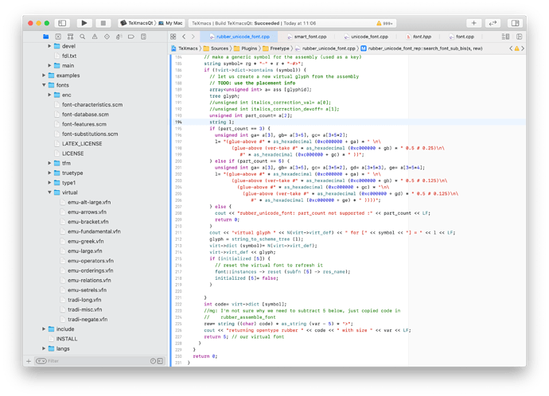
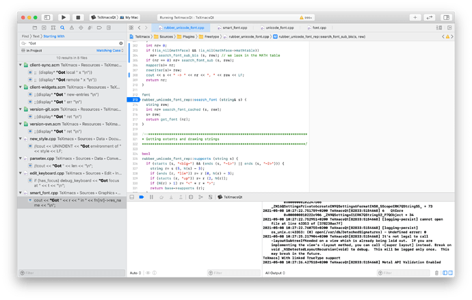

[main]Notes on TeXmacs
[main]Notes on TeXmacs
 [main]Notes on TeXmacs
[main]Notes on TeXmacs
[Last update 21.4.2022]
An interesting talk about open source community (video).
We need syntax highlighting computations when rendering verbatim code snippets and also when exporting to HTML, for example. Currently there is some parsing library written in C++ inside TeXmacs (see the src/System/Language directory), but this does not cover HTML output and it is quite rudimentary. In this blog for example we achieve syntax-highlighting for HTML via an external JavaScript library. It would be useful just to output the appropriate elaborated text (together with a plain-text version for copy/paste). In general it could be maybe interesting to evaluate the use of external libraries for syntax analysis of programming languages.
Tree-sitter is a recent interesting library for computing incrementally an AST for a piece of text, including error recovery. It is written in C/C++ with no external dependencies (as it is claimed) which make relatively easy an inclusion in TeXmacs. The github link, and a presentation talk on youtube.
The KDE project has a syntax-highlighting engine here where languages descriptions comes in external XML files.
It could be useful for us to be able to parse the Markdown format. There are various available parsers which could be integrated as plugins in the codebase, for example PEG-markdown, sundown, libsoldout, md4c and also some native scheme implementations like lowdown for Chicken Scheme. Currently in TeXmacs we do not have a generic way to parse external languages: for example internally the parsing of HTML or TeX is done via C++ code without any common parsing substrate (as far as I can see). There is some support for packrat parsing but it is used only in the semantic checking of math formulas and it seems that the packrat parser is not capable of semantic actions, i.e. can only report if a string (or tree?) belongs to some language or not. Tree-sitter could also be an option as generic parsing mechanism. It could be useful to think how to factor and restructure the parsing mechanisms in TeXmacs to avoid duplicating code/efforts/know-how.
This could be an area where we can improve substantially over LaTeX-based workflows, probably. We need to check what is done in other text-processing software. Some interesting resources
Languagetool is a (big) open source Java system for grammar correction in various languages. Maybe it is conceivable to offer the possibility to use it as an external service (on the web or locally).
A list of grammar-checking resources in github: URL.
Programs that link to Languagetools for LaTeX documents: texidote, vscode-ltex.
Spellchecking alternatives: nuspell, hunspell, symspell ... which to pick, if any? We would need to survey tradeoffs and opportunities.
A strategical goal would be to improve support for general mechanisms to talk to external programs:
Jupyter is a protocol to interface clients to computational kernels (Python, Julia, Haskell,...). We already have a very primitive plugin here tm_jupyter (written in Python). It could potentially replace many of our various plugins and allow easier maintenance. Moreover it could allow TeXmacs to be an alternative to Jupyter notebooks or Jupyter Qt Console. One can look to these projects to understand which features have to be supported. Jeroen has improved the tm_jupyter plugin here.
Language Server Protocol allows to connect to various programming language servers to obtain semantic informations, code completions, etc... For example it could be useful to provide an interface to theorem provers like Lean or Isabelle/HOL. In general this could be related to literate programming capabilities/projects.
In some circumstances it is useful to transmit both a PDF version of a document and the associated TeXmacs file (eventually with all the needed support files like custom styles and images). This allow usual PDF viewers to open the file and at the same time allows users of TeXmacs to be able to retrieve an editable version of the document for modification. It is useful to augment PDF with additional information to improve the user experience on a variety of platforms which do not allow to access the original TeXmacs documents. The PDF format gives the possibility to embed arbitrary content within the document as “Embedded file” streams. This possibility is exploited by the LaTeX package attachfile which allows to associate to typesetted parts of the document arbitrary attachments with the possibility to recover it. We could introduce a similar features in TeXmacs. Various possible directions:
first include external content in a TeXmacs document, as already happens with images, but in a way that each document has its own filesystem which can be manipulated.
include a TeXmacs document within a generated PDF file in such a way that it is possible to open the PDF from TeXmacs and edit its source
develop optional augmentation of the generated PDF by adding popups for link previews, and possibly create style files for generating more interactive PDF (e.g. show answers to questions, popups with arbitrary information, …) See this tutorial to see how this might be implemented in the PDF format (youtube)
write code which insert in the PDF interactive features like popups (for preview or for additional content), better tables of content, etc…
add some more meta informations to the PDF file, like an interface (a PDF form) to record metadata explicitly and maybe a modification log, some more informations about the bibliography, preview links (like in the UI), and LaTeX translations of the formulas to allow correct copy/paste in the PDF.
Useful links
MuPDF is a PDF handling C library, look e.g. at the pdf-link.c file there
the Poppler library has two utilities which perform attachment/detachement of documents, see
some useful notes in the PDF Hummus wiki
The, already mentioned, LaTeX package attachfile
A discussion about this topic is taking place in the forum (here)
We maybe want to develop a more organic solution. Interesting links:
Zotero better BibTeX (github), Zotero CLI (github), Zotelo (Zotero/Emacs integration) (github), Web bibliographies with Zotero (github), Zotero/LyX integration (github).
Modifications to the documents are incremental, so one would like to take this into account when recomputing both the typesetting and the rendering onscreen. This problem is also relevant when syncronizing live-editing document across a network connection. Some infrastructure is already present in TeXmacs (details?). Here are gathered some approaches to incremental computations in a general context.
The paper “Purely Functional Incremental Computing” (PDF).
Talk on implementing Data-driven incremental UIs (in OCAML) (youtube). And a longer talk with more details (youtube).
A blog post at Jane Street (URL)
Adaptive computation library in JS (link)
What: Help improve the collaborative features of TeXmacs, in particular add user cursors to the live documents and improve performance or add peer-to-peer infrastructure to the live document handling.
Why: TeXmacs has already collaborative capabilities. See e.g.
the support in $TEXMACS_PATH/progs/server and
$TEXMACS_PATH/progs/client.
We support live documents, chat rooms and shared file server. However these features are still experimental and need testing, some more security handling (authentication, etc…), etc… and they depends on a central server (another TeXmacs instance) which should be publicly visible on the Internet (i.e. have its own IP address).
How: Various directions are possible:
Better UI: the current UI does not give much feedback to the user, especially wrt. problems in the connection to the server, successful connection, liveliness of the server, etc…
Implement user cursors in live documents : a users should be able to see where other users are actively working.
Investigate performance issue in the current implementation and
improve on them. Also investigate other possible mechanism of
synchronisation, e.g. the one used in Typst or other
collaborative solutions.
Develop some server-side architecture and relative monitoring to run the Mogan server in a cloud solution like Amazon AWS or similar.
Alternatively (and much better than the central server solution), investigate the possibility to create a peer-to-peer network using modern internet technologies where clients can connect together and sync their content without the presence of a centralised authority.
Some references:
A discussion in the forum (here)
the libp2p library (bloated, produces >100Mb executables)
the libdatachannel C++ library. lightweight, needs a signalling server to exchange connection information (which seems an acceptable tradeoff) and then uses WebRTC to run a p2p channel
a serverless solution for signalling https://medium.com/collaborne-engineering/serverless-yjs-72d0a84326a2
an intro to WebRTC channels and signalling: https://blog.devgenius.io/webrtc-chat-application-772539ae97b7
holepunch.io a complete p2p solution (but without C++
bindings), see hyperbeam for a simple tunnelling p2p
app.
p2psc a p2p socket creation library in C++
p2p-socket a Node program which establish p2p connection over local TCP ports
NAT hole punching like these require the use of an intermediate server. We can run a lightweight server (e.g. coded in Javascript) like here: https://medium.com/collaborne-engineering/serverless-yjs-72d0a84326a2 or use DHTs like the p2p-socket solution with uses holepunch.io to establish the connection.
the GNU project has its own p2p communication platform called JAMI 1. Docs are here: https://docs.jami.net they have all the APIs and infrastructure which allow to connect two clients to exchange info, we could leverage that for TeXmacs, and maybe also write a TeXmacs plugin for JAMI so that one can collaborate via teleconferencing and work on the same document (to be seen, I've not yet looked in detail in their plugin system).
What: Add support for OpenType MATH table & related font features (https://learn.microsoft.com/en-us/typography/opentype/spec/math 1)
investigate the possibility to remove the old TeX fonts and only use modern OpenType font containers (at least for the default fonts).
Why: At the moment TeXmacs is able to use only very few math fonts (like Stix, TeX Gyre) and this support is hardwired in the C++ files and does not take into account all the informations available in the font files.
These fonts file contain the position in the font of extensible brackets or extensible glyphs like arrows, square roots, etc…, and the metrics to correctly position index and subscripts.
Some time ago mgubi started to implement some OpenType font support for TeXmacs, here: https://github.com/mgubi/texmacs/tree/wip-unicode-math 2
TeXmacs still depends very much on old font formats while there are now available many free fonts in OpenType format which make it easier to support professional math typesetting. In particular there are Latin Modern fonts which can replace our old TeX fonts, and possibly improve speed since there will be less font searching.
One side goal could be to get rid of all TeX fonts and distribute only the OpenType variants. This is for example what ConTeXt does.:
https://wiki.contextgarden.net/ConTeXt_distribution's_Fonts 1
For a discussion see here: https://github.com/XmacsLabs/mogan/issues/523 1
How: Study and document the font selection mechanism in TeXmacs, in particular how math glyphs are selected from the various fonts. Possibly write some debugging tools which allow developers to check the workings of which glyphs are selected, which metrics used, etc…


Complete and debug the initial implementation of the MATH table parser here: https://github.com/mgubi/texmacs/tree/wip-unicode-math
A discussion is taking place in the forum here.
{kind=link}
{kind=link}
{kind=link}
{kind=link}
{kind=link}